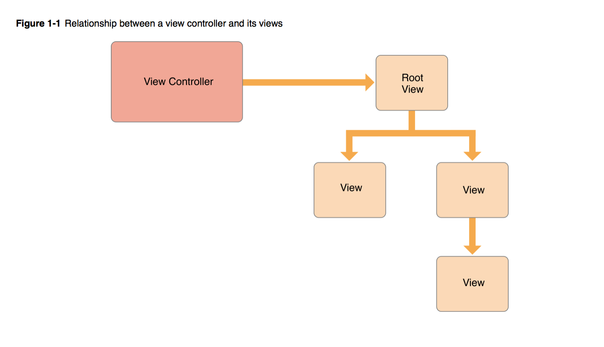

View Controller Programming Guide
Introduction
Problem
What does UIViewController do?
The root view controller is accessible from the rootViewController property of the UIWindow object. When you use storyboards to configure your view controllers, UIKit sets the value of that property automatically at launch time. For windows you create programmatically, you must set the root view controller yourself.

Provides the infrastructure for managing the views of your UIKit app.
The most important role of a view controller is to manage a hierarchy of views. Every view controller has a single root view that encloses all of the view controller’s content. To that root view, you add the views you need to display your content

Container View Controller
Here are the essential methods you might need to call:
addChildViewController
removeFromParentViewController
willMove(toParentViewControlle)
didMove(toParentViewController)
Design Guidlines
Make Each View Controller an Island
View controllers should always be self-contained objects. No view controller should have knowledge about the internal workings or view hierarchy of another view controller. In cases where two view controllers need to communicate or pass data back and forth, they should always do so using explicitly defined public interfaces.
The delegation design pattern is frequently used to manage communication between view controllers. With delegation, one object defines a protocol for communicating with an associated delegate object, which is any object that conforms to the protocol. The exact type of the delegate object is unimportant. All that matters is that it implements the methods of the protocol.
Handling User Interactions
View controllers define action methods for handling higher-level events. Action methods respond to: Specific actions. Controls and some views call an action method to report specific interactions. Gesture recognizers. Gesture recognizers call an action method to report the current status of a gesture. Use your view controller to process status changes or respond to the completed gesture. View controllers observe notifications sent by the system or other objects. Notifications report changes and are a way for the view controller to update its state. View controllers act as a data source or delegate for another object. View controllers are often used to manage the data for tables, and collection views. You can also use them as a delegate for an object such as a CLLocationManager object, which sends updated location values to its delegate.
Eliminate memory leaks.
Because memory is a critical resource in iOS, your app should never have memory leaks. Use the Instruments app to track down leaks in your code, both in Simulator and on actual devices.
- Compress all image files to make them as small as possible.
- If your app manipulates large amounts of structured data, store it in a Core Data persistent store or in a SQLite database instead of in a flat file. Both Core Data and SQLite provides efficient ways to manage large data sets without requiring the entire set to be in memory all at once.
- Load resources lazily. You should never load a resource file until it is actually needed. Prefetching resource files may seem like a way to save time, but this practice actually slows down your app right away. In addition, if you end up not using the resource, loading it wastes memory for no good purpose.
Reduce Your Memory Footprint
Every app should free up as much memory as is practical upon entering the background. The system tries to keep as many apps in memory at the same time as it can, but when memory runs low it terminates suspended apps to reclaim that memory. Apps that consume large amounts of memory while in the background are the first apps to be terminated.
Practically speaking, your app should remove strong references to objects as soon as they are no longer needed. Removing strong references gives the compiler the ability to release the objects right away so that the corresponding memory can be reclaimed. However, if you want to cache some objects to improve performance, you can wait until the app transitions to the background before removing references to them.
Image objects you created. (Some methods of UIImage return images whose underlying image data is purged automatically by the system.
To help reduce your app’s memory footprint, the system automatically purges some data allocated on behalf of your app when your app moves to the background.
The system purges the backing store for all Core Animation layers. This effort does not remove your app’s layer objects from memory, nor does it change the current layer properties. It simply prevents the contents of those layers from appearing onscreen, which given that the app is in the background should not happen anyway. It removes any system references to cached images. It removes strong references to some other system-managed data caches.
Resources
References
Conclusion
View Controller Programming Guide for iOS https://developer.apple.com/library/content/featuredarticles/ViewControllerPGforiPhoneOS/